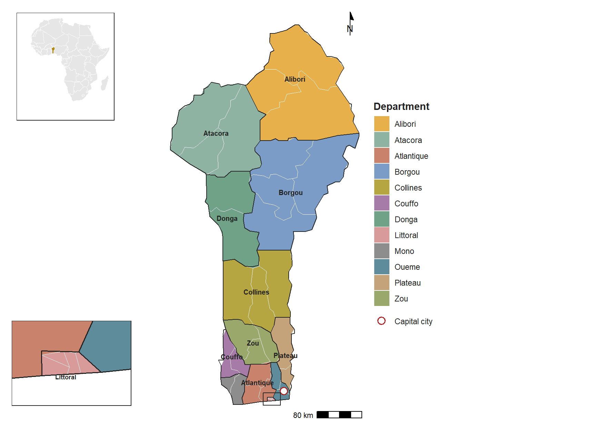
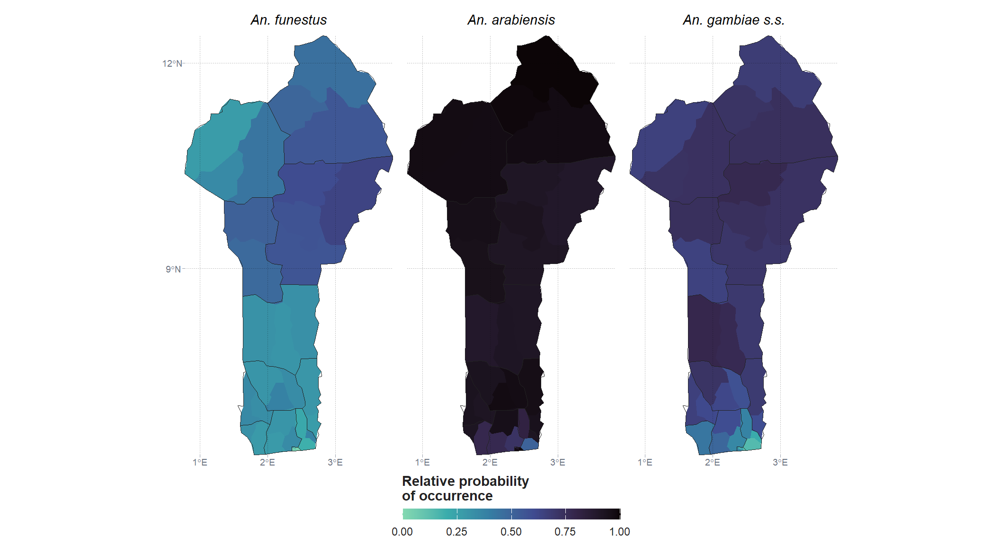

| Indicator | Value | Unit | Year | Source |
|---|---|---|---|---|
| Population | 14,462,724 | count | 2022-2024 | WHO World Malaria Report 2024; World Bank |
| Population at risk | 100 | % | 2023 | WHO World Malaria Report 2024 |
| Prevalence (6-59 months, RDT) | 32.3 | % | 2022 | MIS 2022, cited in PMI Benin Malaria Profile |
| Incidence (/1000 people) | 362 | per 1000 | 2023 | WHO World Malaria Report 2024 |
| Incidence (/1000 people) | 212 | per 1000 | 2021 | PMI Benin Malaria Profile |
| Mortality | 9,900 | count | 2023 | WHO World Malaria Report 2024 |
| Mortality | 2,759 | count | 2023 | WHO World Malaria Report 2024 |
Benin Malaria Epidemiology Summary
1. Introduction
Benin is a narrow, elongated country in West Africa bordered by Togo, Burkina Faso, Niger, and Nigeria, with a population of roughly 14.5 million (WHO, 2023; World Bank, 2024). Malaria is endemic nationally and remains the leading cause of under-five mortality and a significant cause of adult morbidity, placing Benin among the 15 highest-burden countries globally (WHO World Malaria Report, 2024). This profile consolidates the country’s administrative and demographic context, malaria epidemiology, control history, and health system to support evidence-based planning and correct interpretation of MAP’s model outputs.
2. Summary Statistics
Country and malaria summary indicators are compiled from the World Malaria Report/WHO Global Health Observatory, HMIS/DHIS2 reporting, and the MIS 2022 survey. Where WHO’s modelled estimates diverge substantially from routine-reported figures, both are shown, since this distinction matters for correct interpretation of burden.
Table 1: Summary statistics
3. Administrative Boundaries
Benin comprises 12 departments, subdivided into 77 communes, further divided into 546 arrondissements, composed of 5,295 villages. The health system, however, is organized around 34 health zones, which do not correspond one-to-one with communes or departments (PMI, 2023), a distinction worth flagging for any stratification or spatial analysis intended to align with programmatic decision-making, since correspondence between department/commune boundaries and health-zone boundaries will need to be resolved before model outputs from this profile can be used at the health-zone level.
Figure: Benin_StudyArea_Map Caption: Administrative departments of Benin, showing the 12 departments and their capitals as well as the number of communes per department, the capital (Porto-Novo, blue), and main city (Cotonou, red)
Source: Institut géographique National du Bénin (IGN-Benin) via Humanitarian Data Exchange, 2026

Source: Administrative boundaries: Malaria Atlas Project (release 202403), retrieved 2026-10-21.
4. Malaria Situation
Three transmission zones are recognized nationally: a heterogeneous southern coastal zone, a holoendemic central plateau, and a markedly seasonal northern Sahelian zone, with Plasmodium falciparum responsible for 98-100% of infections (PMI, 2023; WHO, 2024). Benin is among the 15 highest-burden countries globally, accounting for an estimated 2% of global malaria cases and 1.7% of global malaria deaths in 2023 (Severe Malaria Observatory, 2024). Malaria remains the leading cause of under-five mortality and accounts for roughly 37–40% of outpatient consultations and 25% of hospital admissions nationally (PMI, 2018). Routine surveillance shows a rising absolute caseload alongside a declining test positivity rate over 2018-2022, consistent with expanding diagnostic access rather than worsening transmission.
5. History of Malaria (last 20 years)
Benin’s malaria response built out steadily from the mid-2000s: ACTs became first-line treatment in 2004, free LLINs and IPTp were adopted in 2008, and a nationwide mass LLIN campaign followed in 2011 alongside free case management for children under five and pregnant women. IRS was rolled out in phases - Ouémé (2008), expanding south (2010) and north to Atacora (2011) - while the National Malaria Strategic Plan 2017-2021 set the long-term goal of malaria being “no longer a public health problem” by 2030. Seasonal malaria chemoprevention was introduced in 2019 and expanded through 2021, reflecting growing recognition of the seasonal transmission pattern in the north. National parasite prevalence (RDT, children 6-59 months) moved from 25% (2011-12) to 37% (2015), 36% (2017-18), and 32% (2022). The RTS,S malaria vaccine was rolled out in 2024, the most recent addition to the prevention package (Alohoutade et al., 2026).
Figure: Benin_history_timeline Caption: History of malaria control in Benin, 2004–2024, with national parasite prevalence (RDT, children 6–59 months)
Source: Compiled from PMI Benin Malaria Profile; DHS/MIS survey rounds (see References)
6. Malaria Indicator Summary
6a. DHIS2-derived indicators (incidence)
Routine indicators below are drawn from Benin’s DHIS2/HMIS system, adopted in 2015, with facility reports compiled via health-zone statisticians (PMI, 2023).
Table 2a: DHIS2 routine indicators | Indicator | Value | Year | Source | |—|—:|—:|—| | All-cause consultations | 4,472,873 | 2018 | PMI Benin Malaria Profile (2023) | | All-cause consultations | 5,560,281 | 2019 | PMI Benin Malaria Profile (2023) | | All-cause consultations | 4,904,138 | 2020 | PMI Benin Malaria Profile (2023) | | All-cause consultations | 5,776,664 | 2021 | PMI Benin Malaria Profile (2023) | | All-cause consultations | 6,182,680 | 2022 | PMI Benin Malaria Profile (2023) | | Suspected malaria cases | 2,772,052 | 2018 | PMI Benin Malaria Profile (2023) | | Suspected malaria cases | 3,574,850 | 2019 | PMI Benin Malaria Profile (2023) | | Suspected malaria cases | 3,567,825 | 2020 | PMI Benin Malaria Profile (2023) | | Suspected malaria cases | 3,963,295 | 2021 | PMI Benin Malaria Profile (2023) | | Suspected malaria cases | 4,156,080 | 2022 | PMI Benin Malaria Profile (2023) | | Confirmed cases | 1,755,597 | 2018 | PMI Benin Malaria Profile (2023) | | Confirmed cases | 2,629,232 | 2019 | PMI Benin Malaria Profile (2023) | | Confirmed cases | 2,510,009 | 2020 | PMI Benin Malaria Profile (2023) | | Confirmed cases | 2,641,242 | 2021 | PMI Benin Malaria Profile (2023) | | Confirmed cases | 2,749,861 | 2022 | PMI Benin Malaria Profile (2023) | | Presumed cases | 386,794 | 2018 | PMI Benin Malaria Profile (2023) | | Presumed cases | 215,411 | 2019 | PMI Benin Malaria Profile (2023) | | Presumed cases | 117,714 | 2020 | PMI Benin Malaria Profile (2023) | | Presumed cases | 294,845 | 2021 | PMI Benin Malaria Profile (2023) | | Presumed cases | 99,629 | 2022 | PMI Benin Malaria Profile (2023) | | Test positivity rate | 74.2% | 2018 | PMI Benin Malaria Profile (2023) | | Test positivity rate | 75.3% | 2019 | PMI Benin Malaria Profile (2023) | | Test positivity rate | 72.8% | 2020 | PMI Benin Malaria Profile (2023) | | Test positivity rate | 72.1% | 2021 | PMI Benin Malaria Profile (2023) | | Test positivity rate | 67.8% | 2022 | PMI Benin Malaria Profile (2023) | | Cases in children under 5 | 819,022 | 2018 | PMI Benin Malaria Profile (2023) | | Cases in children under 5 | 1,150,559 | 2019 | PMI Benin Malaria Profile (2023) | | Cases in children under 5 | 1,126,419 | 2020 | PMI Benin Malaria Profile (2023) | | Cases in children under 5 | 1,169,957 | 2021 | PMI Benin Malaria Profile (2023) | | Cases in children under 5 | 1,068,071 | 2022 | PMI Benin Malaria Profile (2023) | | Severe cases | 171,990 | 2018 | PMI Benin Malaria Profile (2023) | | Severe cases | 221,420 | 2019 | PMI Benin Malaria Profile (2023) | | Severe cases | 166,982 | 2020 | PMI Benin Malaria Profile (2023) | | Severe cases | 191,854 | 2021 | PMI Benin Malaria Profile (2023) | | Severe cases | 197,440 | 2022 | PMI Benin Malaria Profile (2023) | | Deaths (all ages) | 2,251 | 2018 | PMI Benin Malaria Profile (2023) | | Deaths (all ages) | 3,501 | 2019 | PMI Benin Malaria Profile (2023) | | Deaths (all ages) | 2,938 | 2020 | PMI Benin Malaria Profile (2023) | | Deaths (all ages) | 2,966 | 2021 | PMI Benin Malaria Profile (2023) | | Deaths (all ages) | 3,204 | 2022 | PMI Benin Malaria Profile (2023) | | % of cases reported by CHWs | 12.7% | 2020 | PMI Benin Malaria Profile (2023) | | % of cases reported by CHWs | 7.7% | 2021 | PMI Benin Malaria Profile (2023) | | % of cases reported by CHWs | 2.8% | 2022 | PMI Benin Malaria Profile (2023) | | Facilities reporting | 1,338 | 2018 | PMI Benin Malaria Profile (2023) | | Facilities reporting | 1,375 | 2019 | PMI Benin Malaria Profile (2023) | | Facilities reporting | 1,512 | 2020 | PMI Benin Malaria Profile (2023) | | Facilities reporting | 1,800 | 2021 | PMI Benin Malaria Profile (2023) | | Facilities reporting | 1,781 | 2022 | PMI Benin Malaria Profile (2023) | | Data completeness | 97% | 2018 | PMI Benin Malaria Profile (2023) | | Data completeness | 97% | 2019 | PMI Benin Malaria Profile (2023) | | Data completeness | 98% | 2020 | PMI Benin Malaria Profile (2023) | | Data completeness | 99% | 2021 | PMI Benin Malaria Profile (2023) | | Data completeness | 99.5% | 2022 | PMI Benin Malaria Profile (2023) |
6b. Survey-derived indicators (prevalence / mortality) - pulled from STATcompilerExport
| Indicator | 2017-18 DHS | 2011-12 DHS | 2006 DHS | 2001 DHS | 1996 DHS |
|---|---|---|---|---|---|
| Malaria burden | |||||
| Prevalence by RDT, children 6-59 months | 36.3 (33.7 to 39.0) |
24.8 (22.6 to 27.0) |
- | - | - |
| Under-five mortality rate (per 1,000 live births) | 96 (90 to 103) |
70 (64 to 76) |
125 (118 to 132) |
160 (148 to 172) |
166 (154 to 179) |
| Insecticide-treated nets (ITNs) | |||||
| Households with at least one ITN | 91.5 | 79.8 | 24.5 | - | - |
| Population with access to an ITN | 77.2 | 64.0 | 14.7 | - | - |
| Population who slept under an ITN | 71.1 | 62.7 | 14.7 | - | - |
| Children under 5 who slept under an ITN | 76.3 | 69.7 | 20.3 | - | - |
| Malaria in pregnancy | |||||
| Women with 3+ doses of SP/Fansidar in pregnancy | 13.7 | 10.0 | 1.2 | - | - |
| Case management, children with fever | |||||
| Advice or treatment sought | 53.1 | 55.8 | 64.6 | - | - |
| Blood taken for testing | 17.7 | 17.3 | - | - | - |
| Took an artemisinin-based combination | 6.5 | 12.3 | 0.4 | - | - |
Source: The DHS Program STATcompiler (ICF), www.statcompiler.com. Accessed October 23 2026. Confidence intervals are shown for prevalence and mortality. A dash means the indicator was not measured in that survey.
7. Health System
Benin’s health system follows a three-tier pyramidal structure: central (Ministry of Health, national hospitals), intermediate (12 departments, via Departmental Health Directorates), and peripheral (34 health zones, via Health Zone Management Teams). Each reports through DHIS2, with paper forms still used peripherally (PMI, 2023). Community health workers (relais communautaires for prevention/referral, agents de santé communautaires qualifiés for testing/treatment) support the peripheral tier, though only 36 of roughly 1,474 CHWs nationally currently provide malaria testing services. Facility coverage rose from 89% (2005) to 96% (2021), financing runs through a common-basket system with free case management for the highest-risk groups, and DHIS2 reporting completeness reached 99.5% by 2022.
Figure: benin_health_pyramid Caption: Benin health system reporting structure.
Source: U.S. President’s Malaria Initiative (2023). Benin Malaria Profile, PMI FY2024 (see references)
8. Stratification Maps / SNT
Benin’s stratification has evolved from the coarse MARA/ARMA national risk map, through the NMSP 2017-2021’s three-zone ecological classification, to the 2021 PNLP/Swiss TPH health-zone-level modelling exercise that directly informed Benin’s 2021–2023 Global Fund funding request. The most recent publicly available products are the MARA/ARMA-updated transmission-season map and the MIS 2022 department-level RDT prevalence maps for pregnant women and children under five. Benin is not among the original 10 WHO HBHI countries that underwent the standardized SNT process, so these remain the most current stratification outputs identified for this profile.
Figure: benin_stratification1 Caption: Start month of the malaria transmission season by department
Source: MARA/ARMA, updated with 2021 case data
Figure: benin_stratification2 Caption: Malaria prevalence (RDT) by department, MIS 2022: (1) pregnant women, (2) children under 5
Source: U.S. President’s Malaria Initiative
9. Environment and Seasonality
Malaria transmission tracks Benin’s north-south climatic gradient: a sub-equatorial, bimodal-rainfall south (transmission starting April), a transitional central plateau (June), and a semi-arid Sahelian north with a single rainy season (July) (MARA/ARMA, 2021). Nationally, peak transmission spans April–October, but this masks the zonal heterogeneity that determines, for example, SMC eligibility in the north, which requires at least 60% of annual cases to fall within a 4-month window (Merle et al., 2023). The Harmattan dry-season wind further suppresses vector breeding and marks the national low-transmission window.
10. Vector Profile
Plasmodium falciparum causes 98-100% of infections in Benin, transmitted primarily by the Anopheles gambiae complex: An. coluzzii (~91%), An. gambiae s.s. (~8%), and hybrids (~1%), with An. funestus as a secondary vector and An. arabiensis/An. nili also present (PMI, 2023; WHO, 2024). Insecticide resistance is now the central operational constraint: pyrethroid resistance is confirmed at 100% of sites tested, partially restored by PBO synergist, while carbamate resistance is present at 57% of sites, and organophosphate, pirimiphos-methyl, and chlorfenapyr susceptibility remain intact. IRS was phased in from 2008 to 2011 but PMI funding ended in 2021, and the Centre de Recherche Entomologique de Cotonou (CREC) remains the primary source for more granular vector data.
Figure (maps recommended): benin_vector_dry_vs_rainy Caption: Dominant malaria vector species by department in Benin: (1) dry season, (2) rainy season. An. coluzzii predominates nationally in the dry season and in the south year-round; An. gambiae becomes more represented in parts of the north and center during the rainy season, with the exception of Malanville (Alibori), which remains couzzii-dominant in both seasons.
Source: Akpodji S, Agbangla C, Akogbéto M, et al. (2025). Tropical Medicine and Health, 53:147
Resistance profile:
Table 4: Resistance profile | Species | Insecticide class | Finding | Year | Source | |—|—|—|—|—| | An. gambiae s.l. | Pyrethroids/DDT | Widespread resistance confirmed at sentinel sites nationwide (Cotonou, Malanville, Bohicon, Tori-Bossito) | 2011 | Djègbè et al., 2011 | | An. gambiae s.l. (northern Benin) | Pyrethroids (deltamethrin, permethrin) | Mortality only 25–83% (deltamethrin), 6–55% (permethrin) across 6 districts | 2018 | Salako et al., 2018 | | An. gambiae s.s. / An. coluzzii | Target-site (kdr L1014F) | Widespread, mean frequency 0.77 (range 0.67–0.88); consistently higher in An. gambiae s.s. than An. coluzzii | 2018 | Salako et al., 2018 | | An. gambiae, An. arabiensis | Target-site (kdr L1014S) | First evidence in West Africa; also first detection in An. arabiensis nationally | 2011 | Djègbè et al., 2011 | | An. gambiae s.l. | Organophosphate/carbamate (ace-1 G119S) | Rare; frequency 0–0.06, “almost absent” | 2011–2018 | Djègbè et al., 2011; Salako et al., 2018 | | An. gambiae s.l. (agricultural vs. non-agricultural areas) | Pyrethroids (kdr L1014F) | Frequency higher in high-pesticide-use areas (0.90) than low-use areas (0.85) | — | Zenodo/Akogbeto group | | An. gambiae s.l. (northern Benin) | PBO-synergized pyrethroids | Susceptibility significantly restored: deltamethrin mortality rose to 63–99%, permethrin to 56–99% | 2018 | Salako et al., 2018 | | An. gambiae s.l. (Kandi vs. 5 other sites) | Carbamate (bendiocarb) | Fully susceptible at Kandi (99%); possible resistance at 5 other sites (92–95%) | 2018 | Salako et al., 2018 | | An. gambiae s.l. | Organophosphate (pirimiphos-methyl) | Fully susceptible at all sites tested | 2018 | Salako et al., 2018 |

Source: Malaria Atlas Project (malariaAtlas package, retrieved 2026-10-21): Anopheles funestus; Anopheles arabiensis Patton, 1905; Anopheles gambiae Giles, 1902. Each commune shows the mean of the surface within it. Administrative boundaries: Malaria Atlas Project (release 202403), retrieved 2026-10-21.
11. References
Epidemiology
- Africa.com (2026): Economic activity.
- Akpodji S, Agbangla C, Akogbéto M, et al. (2025) — Spatial and temporal distribution of four malaria vector species and their relative contributions to Plasmodium falciparum* transmission along the south–north transect of Benin, West Africa*: Spatial and temporal distribution of four malaria vector species and their relative contributions to Plasmodium falciparum transmission along the south–north transect of Benin.
- Annuaire des statistiques sanitaires, Benin MoH: Routine incidence data.
- Britannica (2026): Capital, general country data.
- Mappemonde (2026): Geographic/demographic context.
- OpenFactBook/World Factbook (2025): Geography.
- PMI Benin Malaria Profile: Prevalence, indicator survey data.
- PMI Benin Malaria Profile (2018): Consultation/hospitalization burden shares (verify edition).
- Severe Malaria Observatory (2024/2026): Global/regional burden share.
- Snow RW & Marsh K (2002) — The consequences of reducing transmission of Plasmodium falciparum* in Africa*: Rationale for transmission-reduction profiling.
- World Bank (2024): Population.
- World Malaria Report 2024 / WHO Global Health Observatory: Estimated incidence, mortality, population-at-risk.
Intervention
- Alohoutade SV, et al. (2026): RTS,S vaccine impact modelling.
Policy/Strategic Plan
- Benin Integrated NSP for Elimination (2024–2030): National targets.
- Exemplars in Global Health (2024): SNT methodology context.
- MARA/ARMA, updated with 2021 case data: Transmission-season stratification map (Figure 4); zone/seasonality data.
- Merle CS, RTS,S-SMC working group (2023) — Implementation strategies for the introduction of the RTS,S/AS01 (RTS,S) malaria vaccine in countries with areas of highly seasonal transmission: workshop meeting report: SMC eligibility, seasonality.
- Omumbo JA, et al. (2013) — How Well Are Malaria Maps Used to Design and Finance Malaria Control in Africa?: Malaria map use in African programmes.
- WHO-AFRO (2012): NSP development manual.
- WHO-AFRO (2021): World Malaria Day Benin.
Health System
- Carte Sanitaire Bénin: Geolocated facility database.
- DHIS2.org (2020): DHIS2 adoption (2015) and data system context.
- Global Community Health Dashboard: CHW figures.
- Malaria HIS Portals: RHIS country profiles.
- PMI Benin Malaria Profile (2023): HMIS indicators, health system, vector composition data.
Resistance
- Djègbè et al. (2011) — Dynamics of insecticide resistance in malaria vectors in Benin: first evidence of the presence of L1014S kdr mutation in Anopheles gambiae* from West Africa*: First evidence of L1014S kdr mutation in An. gambiae, West Africa; nationwide pyrethroid/DDT resistance.
- Salako et al. (2018) — Baseline entomologic data on malaria transmission in prelude to an indoor residual spraying intervention in the regions of Alibori and Donga, Northern Benin, West Africa: L1014F kdr and ace-1 G119S frequencies, PBO restoration, bendiocarb/pirimiphos-methyl susceptibility, northern Benin.
- Yadouleton et al. (2023) — Impacts of agricultural insecticide pressure on L1014F/G119S mutations in An. gambiae* s.l. in Benin*: Agricultural pesticide use vs. kdr frequency.
Data and map sources used for the figures on this page
- Administrative boundaries: Malaria Atlas Project (release 202403), retrieved 2026-10-21.
- Vector distribution surfaces: Malaria Atlas Project (https://data.malariaatlas.org), retrieved 2026-10-21.
Abbreviations
| Abbreviation | Meaning |
|---|---|
| MISAU | Ministry of Health (Ministério da Saúde) |
| SIS-MA | National DHIS2 instance (Sistema de Informação de Saúde para Monitoria e Avaliação) |